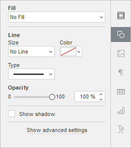

Umetnite SmartArt objekte
SmartArt grafike se koriste za kreiranje vizuelnog prikaza hijerarhijske strukture izborom rasporeda koji najviše odgovara. Možete umetnuti SmartArt objekte ili urediti one koji su dodati u drugim editorima.
Da biste umetnuli SmartArt objekat,
- pređite na tab Insert,
- kliknite na dugme SmartArt,
- pređite kursorom preko jednog od dostupnih stilova rasporeda, npr. List ili Process,
-
izaberite jedan od dostupnih tipova rasporeda sa liste koja se pojavi desno od označene stavke menija.
ili
- kliknite na držač Insert SmartArt na praznom slajdu,
- nastavite prema koracima 3 i 4 iznad.
SmartArt objekat možete sačuvati kao sliku na računaru koristeći opciju Save as picture iz menija desnog klika.
Možete prilagoditi SmartArt podešavanja u desnom panelu:
Imajte u vidu da se podešavanja boje, stila i tipa oblika mogu prilagođavati pojedinačno.

-
Fill – koristite ovaj odeljak za izbor ispune SmartArt objekta. Dostupne su sledeće opcije:
-
Color Fill – izaberite ovu opciju da biste odredili punu boju za ispunu unutrašnjeg prostora izabranog SmartArt objekta.

-
Gradient Fill – koristite ovu opciju za popunjavanje oblika sa dve ili više boja koje se postepeno prelaze. Prilagodite gradijent bez ograničenja. Kliknite na ikonicu Shape settings da biste otvorili meni Fill na desnoj bočnoj traci:

Dostupne opcije menija:
-
Style – izaberite između Linear ili Radial:
- Linear se koristi kada je potrebno da boje prelaze s leva nadesno, odozgo nadole ili pod bilo kojim uglom u jednom smeru. Prozor za pregled Direction prikazuje izabrani smer gradijenta; kliknite na strelicu da biste izabrali unapred definisan smer. Koristite podešavanje Angle za precizan ugao gradijenta.
- Radial se koristi za prelaz boje iz centra ka spolja.
-
Gradient Point je određena tačka prelaza iz jedne boje u drugu.
- Koristite dugme Add Gradient Point ili klizač da biste dodali tačku gradijenta. Možete dodati do 10 tačaka gradijenta. Svaka nova tačka neće uticati na postojeći izgled gradijenta. Koristite dugme Remove Gradient Point da biste uklonili određenu tačku.
- Koristite klizač da biste promenili položaj tačke gradijenta ili unesite Position u procentima za precizno pozicioniranje.
- Da biste primenili boju na tačku gradijenta, kliknite na tačku na klizaču, a zatim kliknite na Color da biste izabrali željenu boju.
-
Style – izaberite između Linear ili Radial:
-
Picture or Texture – izaberite ovu opciju da biste koristili sliku ili unapred definisanu teksturu kao pozadinu SmartArt objekta.

- Ako želite da koristite sliku kao pozadinu SmartArt objekta, možete dodati sliku From File izborom sa računara, From URL unosom odgovarajuće URL adrese ili From Storage izborom slike sa portala.
-
Ako želite da koristite teksturu kao pozadinu SmartArt objekta, otvorite meni From Texture i izaberite potrebnu unapred definisanu teksturu.
Trenutno su dostupne sledeće teksture: canvas, carton, dark fabric, grain, granite, grey paper, knit, leather, brown paper, papyrus, wood.
-
U slučaju da izabrana Picture ima manje ili veće dimenzije od SmartArt objekta, možete izabrati opciju Stretch ili Tile iz padajuće liste.
Opcija Stretch omogućava prilagođavanje veličine slike veličini SmartArt objekta kako bi u potpunosti ispunila prostor.
Opcija Tile omogućava prikaz dela veće slike uz zadržavanje originalnih dimenzija ili ponavljanje manje slike preko površine SmartArt objekta kako bi se prostor u potpunosti popunio.
Napomena: svaka izabrana Texture unapred definisana tekstura u potpunosti ispunjava prostor, ali po potrebi možete primeniti efekat Stretch.
-
Pattern – izaberite ovu opciju da biste ispunili SmartArt objekat dvobojnim šablonom sastavljenim od pravilno ponavljanih elemenata.

- Pattern – izaberite jedan od unapred definisanih šablona iz menija.
- Foreground color – kliknite na ovo polje da biste promenili boju elemenata šablona.
- Background color – kliknite na ovo polje da biste promenili boju pozadine šablona.
- No Fill – izaberite ovu opciju ako ne želite da koristite ispunu.
-
Line – koristite ovaj odeljak za promenu debljine, boje ili tipa linije SmartArt objekta.
- Da biste promenili debljinu linije, izaberite jednu od dostupnih opcija iz padajuće liste Size. Dostupne opcije su: 0.5 pt, 1 pt, 1.5 pt, 2.25 pt, 3 pt, 4.5 pt, 6 pt. Alternativno, izaberite opciju No Line ako ne želite da koristite liniju.
- Da biste promenili boju linije, kliknite na obojeno polje ispod i izaberite potrebnu boju.
- Da biste promenili tip linije, izaberite potrebnu opciju iz odgovarajuće padajuće liste (podrazumevano je primenjena puna linija, ali je možete promeniti u jednu od dostupnih isprekidanih linija).
- Da biste promenili providnost linije, unesite potrebnu vrednost ručno ili koristite odgovarajući klizač.
- Show shadow – označite ovo polje da bi SmartArt objekat imao senku.
-
Color Fill – izaberite ovu opciju da biste odredili punu boju za ispunu unutrašnjeg prostora izabranog SmartArt objekta.
Kliknite na vezu Show advanced settings da biste otvorili napredna podešavanja.